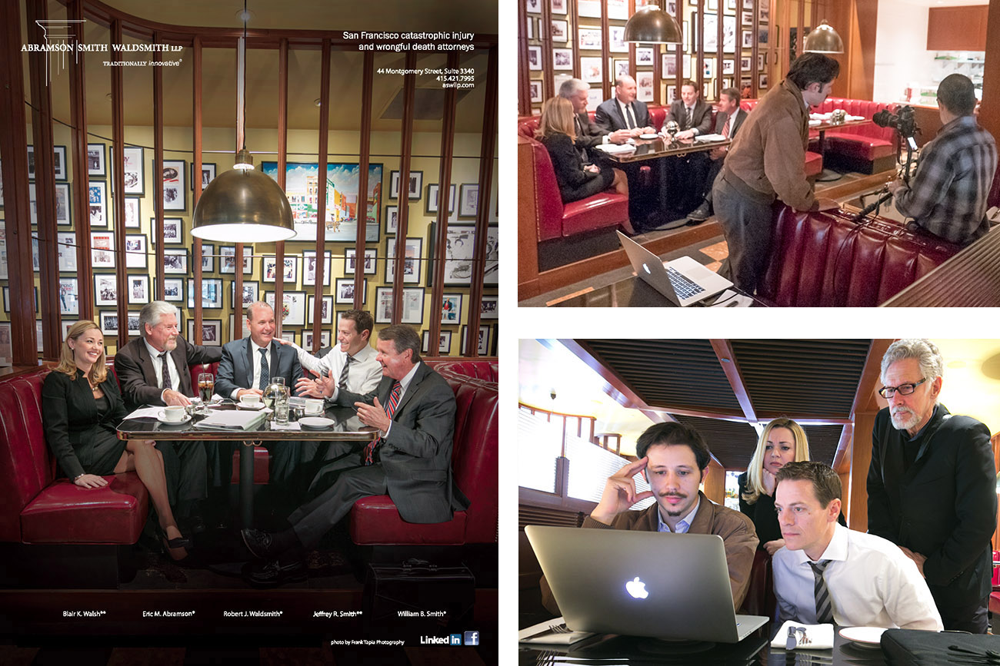
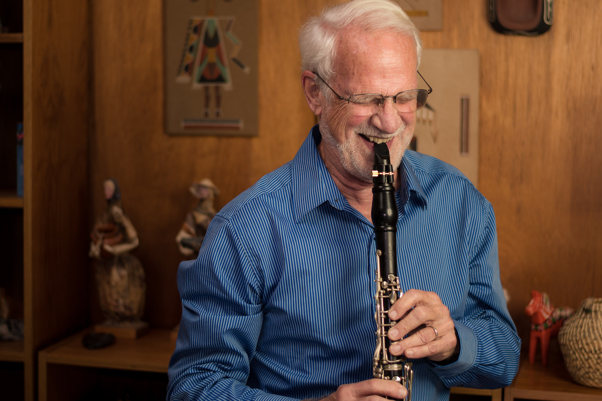
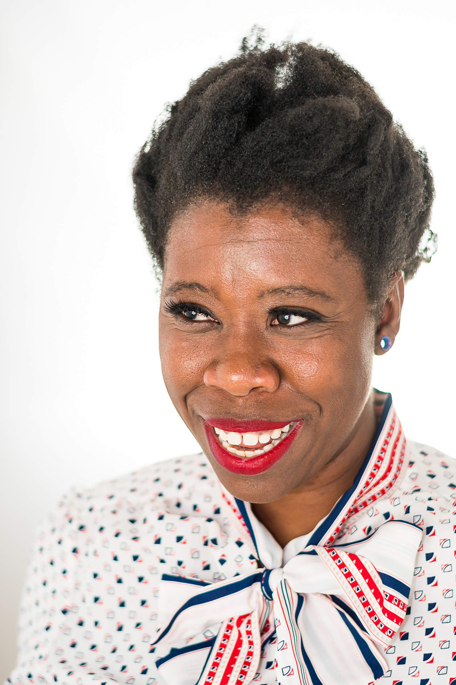
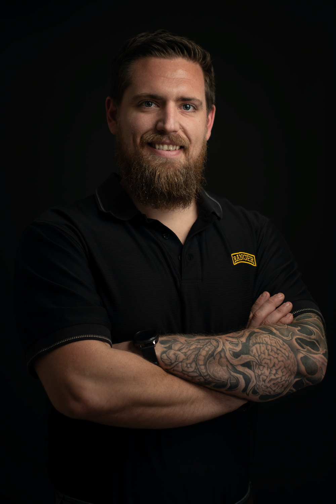
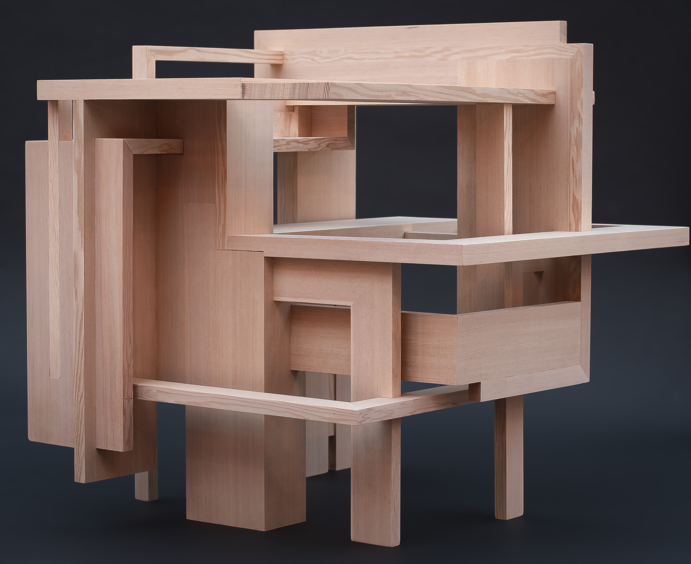
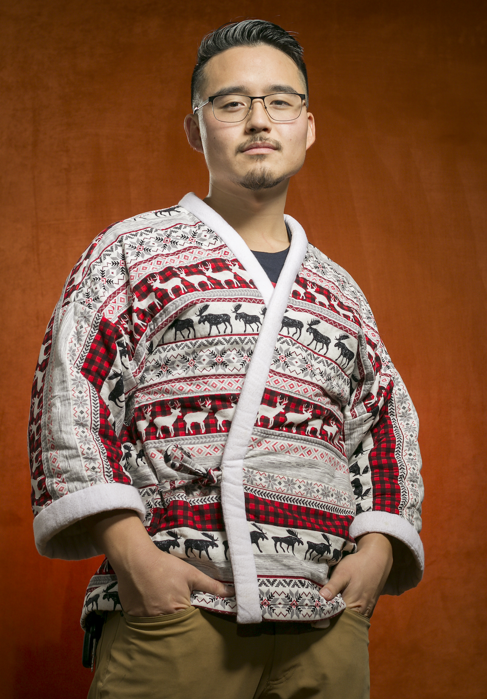
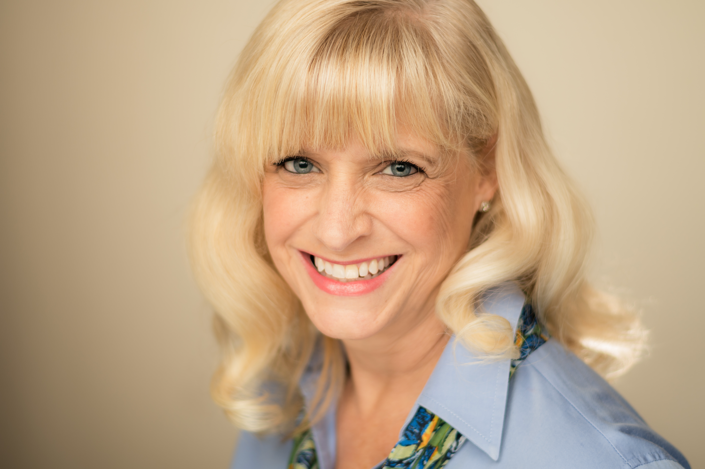

My father, Frank Tapia, is commercial photographer in the San Francisco Bay Area. I started apprenticing with him in 2004 by mostly carrying his gear. As time went on I started to interact with clients, doing Photoshop editing on the spot, and helping with photo selection. Eventually I was able to contribute to composition and run photo shoots myself.
After Steph and I moved to Phoenix, I continued to occasionally fly to California to assist with big jobs. In November of 2018 Stephanie and I started to build our own photography business, Berg & Tapia. It was an excellent supplement to our dance careers. We ended the business when the pandemic started.
Because of pandemic, we discontinued.
Here are a few.
     